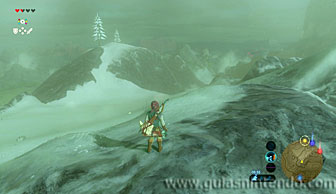
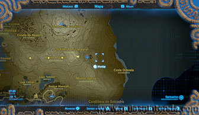
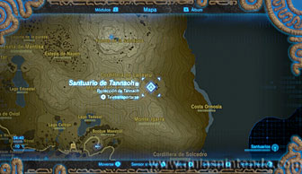
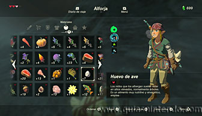
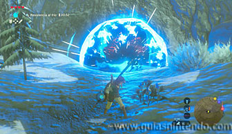
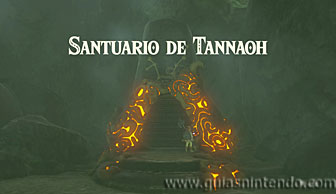
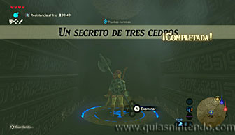
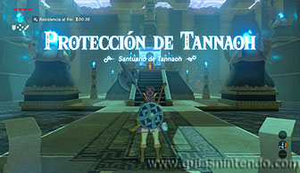
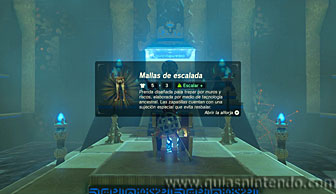

Se encuentra en la región de la torre de Necluda, escondido en una pequeña cueva en las montañas heladas al nordeste de la aldea Hatelia. Para encontrar la cueva tienes que completar la Prueba heroica: Un secreto de tres cedros (una mujer, Clavia, te habla de ella en el puente de madera de Hatelia, aunque no es necesario que oigas la conversación). Te hablará de tres árboles que están en lo alto de tres picos en las montañas heladas. Si sigues la línea recta que forman esos tres árboles hacia el este, encontrarás la cueva donde se encuentra en santuario. Mira la siguiente foto para ver la localización de los árboles (marcados con estrellas) y el santuario.

No es necesario que encuentres los árboles, ni siquiera un punto de vista donde se vean, si vas a la localización del mapa podrás entrar en la cueva. El único problema es el frío que hace en esta zona, no te servirá simplemente la casaca forrada, necesitas una protección mayor o tu energía bajará. Para ello prepara comidas o elixires que te protejan del frío, si no lo haces tendrás que rellenar tu energía cada poco tiempo.

Una vez localizado el lugar exacto, para acceder al santuario debes destruir con bombas las rocas que taponan la entrada a la cueva.

Nada más llegar al santuario completarás la prueba heroica sin necesidad de hacer nada más.

Dentro del santuario solo debes avanzar y abrir el cofre que hay en medio del camino, encontrarás las Mallas de escalada. Cuando llegues al altar podrás examinarlo para obtener un símbolo de valía.
